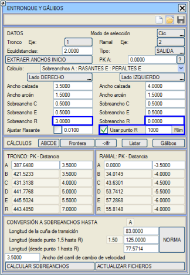
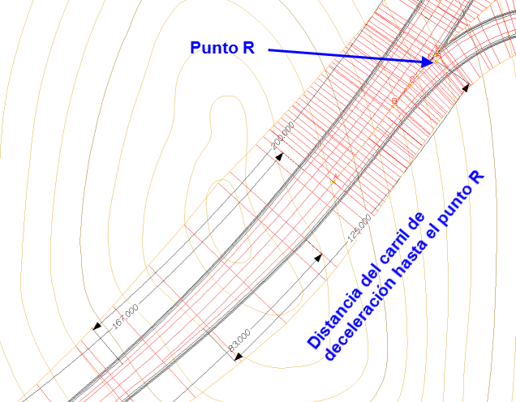
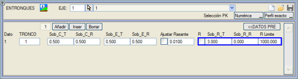

| |
|
R NOKTASINA KADAR BAĞLANTI
|
Belirli ülkelerde, hız değiştirme şeridinin uzunluğu, R noktası olarak adlandıracağımız bir noktaya kadar ölçülür. Bu nokta, ayrılma burnu (B noktası) sonrasında kavşak kolunun ilk dairesel aliymanının başladığı yerdir ve yarıçapı, belirlenen bir limit yarıçaptan daha küçük olmalıdır. R noktasından başlayarak bir bağlantı gerçekleştirirken, resimde işaretli olan R noktasını kullan kutucuğunu ve bir limit yarıçap değeri olan Rmin'i işaretleyeceğiz. Bu değerin üzerindeki yarıçaplar şerit için uygundur. 
Ana yol ve kavşak kolu için R Ek Genişliği kutucuklarından, bu noktanın işaretlediğimiz ana yol eksenine ve kavşak kolu eksenine olan mesafelerini belirleyebiliriz. Bu R noktası, hızlanma veya yavaşlama şeridinin uzunluğunu belirleyen konum olacaktır. Bu kutucuklar aracılığıyla, bu noktanın kavşak kolu ve ana yolun beyaz şeritlerine göre konumunu sınırlarız. Böylece, bağlantı tasarım tablolarında (.den), örneğin CHILE_2013c.den tablosunda olduğu gibi bu parametre görünebilir. Bu dosya, Şili kütüphanesinde yer almaktadır.  Bu şekilde bağlantı şu şekilde olacaktır: 
Boykesit > Bağlantı menüsü içinden bağlantıyı yarı otomatik olarak gerçekleştirirken de R noktası için gerekli parametreleri belirleyebiliriz. 
Örneğin, hızlanma şeritleri durumunda ana yol ek genişliği için 3m ve kavşak kolu ek genişliği için 0m; yavaşlama şeritlerinde ise ana yol ek genişliği için 999m ve kavşak kolu için 0m gibi değerler uygulayabiliriz. |